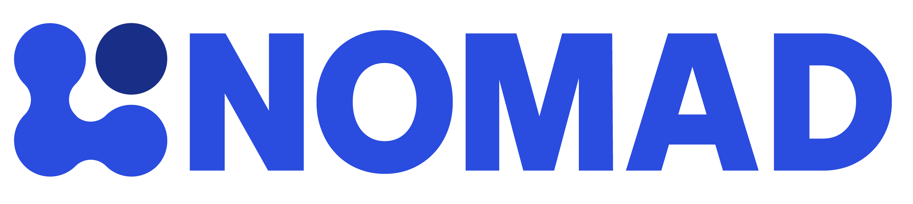

Production storyboards
Choose a video to review
Open a storyboard to move through its transcript, timeline, planned footage, locations, and actors.

Manage and publish research data with NOMAD Central
Browser access, projects, structured entries, analysis, DOI publication, FAIR data, search, and domain apps.

Manage lab data with NOMAD Oasis
Organize laboratory knowledge, connect data sources, adapt workflows with plugins, analyze through NORTH, and publish selected data.
Building the NOMAD ecosystem
How the core development team manages the complexity behind NOMAD so researchers can focus on science.
Designing the NOMAD Experience
Understanding researcher needs and shaping an intuitive, everyday user experience for NOMAD.
Data modeling in computations
Bringing heterogeneous simulation results into a common structure for comparison, reuse, and discovery.
Data modeling in experiments
Turning diverse instrument data into NeXus-compatible structures that NOMAD can understand automatically.
Domain specific search apps in NOMAD
Tailored domain views that help researchers explore curated datasets and find what they need faster.
A trusted platform for research data
Ensuring long-term preservation, backups, and trust for research data in NOMAD.
Automating research workflows
Triggering data-processing and simulation workflows directly in NOMAD Oasis and connecting external compute resources.
Extending NOMAD with plugins
Customizing research data systems with reusable plugin extensions tailored to different workflows and use cases.
Synthesis and ELN data modeling
Capturing materials-synthesis information in a common structure and documenting the full laboratory workflow.
Setting up an Oasis
Initial setup guidance for deploying and operating a NOMAD Oasis in a research environment.
From installation to a production-ready Oasis
Maintaining updates, reusable infrastructure, and sustainable operations as institutional requirements evolve.
From calculations to published datasets
Managing large computation outputs in NOMAD Central and publishing datasets with DOI-backed reusability.
NOMAD data for AI-driven materials discovery
Using NOMAD’s reusable materials data to train ML models such as CrystaLLM for new materials discovery.
Connecting samples, experiments, and data
Automatically processing high-throughput data in NOMAD Oasis and tracing each sample across the full workflow.
Bringing photovoltaics data together
Linking very different experiment types and research outputs across a shared photovoltaics workflow.
Incorporating data literacy in lab courses
Using NOMAD Oasis to teach data practices and structured documentation in teaching environments.